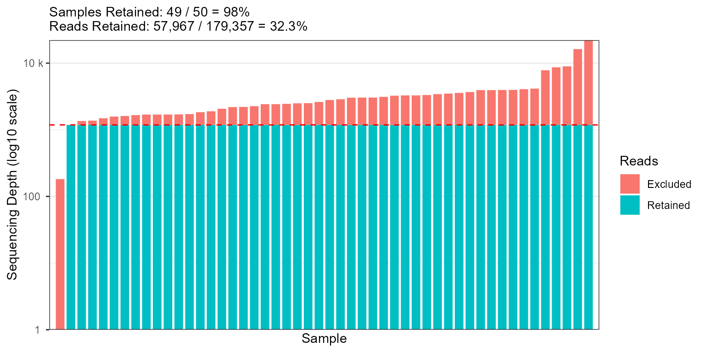
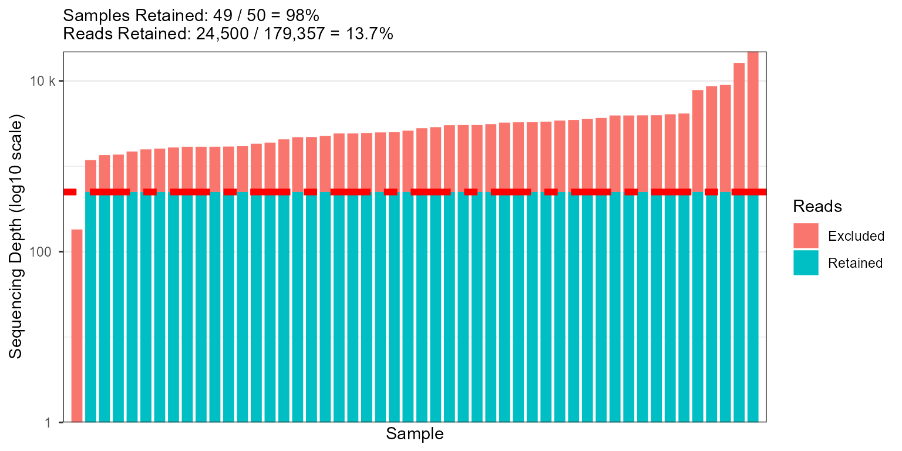

Visualize the number of observations per sample.
Arguments
- biom
An rbiom-class object, or data coercible with
as_rbiom().- rline
Where to draw a horizontal line on the plot, intended to show a particular rarefaction depth. Set to
TRUEto show an auto-selected rarefaction depth,FALSEto not show a line, or an integer for a custom position. Default:TRUE.- counts
Display the number of samples and reads remaining after rarefying to
rlinereads per sample. Default:TRUE.- labels
Show sample names under each bar. Default:
TRUE.- trans
Y-axis transformation. Options are
"log10"orNULL. Default:"log10".- ...
Additional parameters to pass along to ggplot2 functions. Prefix a parameter name with
r.to ensure it gets passed to (and only to) geom_hline. For instance,r.color = "black"ensures only the horizontal rarefaction line has its color set to"black".
Value
A ggplot2 plot.
The computed data points and ggplot
command are available as $data and $code,
respectively.
See also
Other rarefaction:
pull.rbiom(),
rare_corrplot(),
rare_multiplot(),
rarefy_cols(),
rarefy(),
sample_sums()
Other visualization:
adiv_boxplot(),
adiv_corrplot(),
bdiv_boxplot(),
bdiv_heatmap(),
bdiv_ord_plot(),
plot_heatmap(),
rare_corrplot(),
rare_multiplot(),
taxa_barplot(),
taxa_boxplot(),
taxa_corrplot(),
taxa_heatmap()
Examples
library(rbiom)
rare_barplot(hmp50)

rare_barplot(hmp50, rline = 500, r.size = 2, r.linetype = "twodash")

fig <- rare_barplot(hmp50, counts = FALSE)
fig$code
#> ggplot(data) +
#> geom_rect(
#> mapping = aes(xmin = .xmin, xmax = .xmax, ymin = .ymin, ymax = .ymax, fill = .group),
#> color = NA ) +
#> geom_hline(
#> yintercept = 1183,
#> color = "red",
#> linetype = "dashed" ) +
#> labs(
#> fill = "Reads",
#> x = "Sample",
#> y = "Sequencing Depth (log10 scale)" ) +
#> scale_x_discrete() +
#> scale_y_continuous(
#> breaks = 10^(0:5),
#> minor_breaks = as.vector(2:9 %o% 10^(0:4)),
#> labels = scales::label_number(scale_cut = scales::cut_si("")),
#> expand = c(0, 0),
#> trans = "log10" ) +
#> theme_bw() +
#> theme(panel.grid.major.x = element_blank())